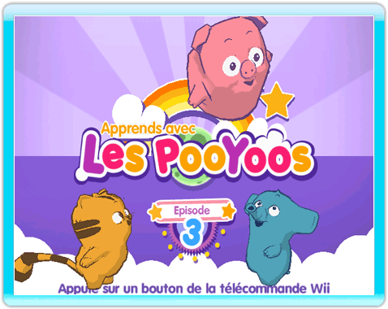
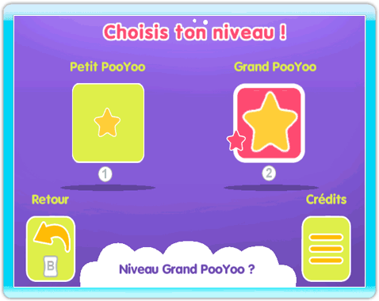
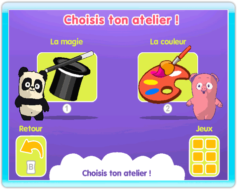
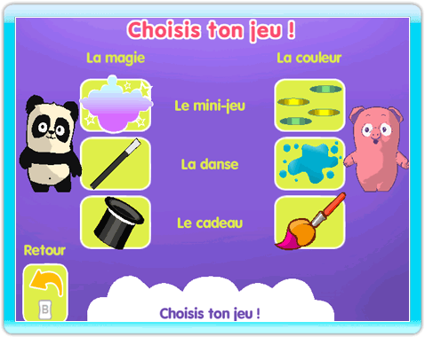

-
Débuter une partie
À l'écran de présentation de la chaîne, pointez DÉMARRER et appuyez sur le bouton A pour lancer le jeu et accéder à l'écran titre.
-
Écran titre
Appuyez sur un bouton pour entrer dans l'univers des PooYoos.

-
Niveau d'apprentissage
Tout d'abord, choisissez le niveau d'apprentissage adapté à l'âge de l'enfant : Petit PooYoo pour les plus jeunes enfants, ou bien Grand PooYoo pour les enfants un peu plus grand. Pour cela, sélectionnez une image avec le pointeur puis appuyez sur le bouton A pour confirmer. Vous pouvez également valider directement la difficulté en appuyant sur le bouton 1 ou 2 : le bouton 1 pour le niveau Petit PooYoo, le bouton 2 pour le niveau Grand PooYoo.

-
Choix de l'atelier
Une fois la difficulté choisie, le menu Choix de l'atelier s'affiche. Sélectionnez l'image d'un atelier avec le pointeur puis appuyez sur le bouton A pour débuter l'atelier. Vous pouvez également sélectionner directement un atelier en appuyant sur le bouton 1 ou 2 : le bouton 1 pour commencer l'atelier de la magie, le bouton 2 pour commencer l'atelier de la couleur.

-
Choix de l'activité
Si votre enfant vous demande de jouer une activité en particulier, visez l'image Jeux située en bas à droite et appuyez sur le bouton A pour accèder au menu Choix du jeu.

|
|
|